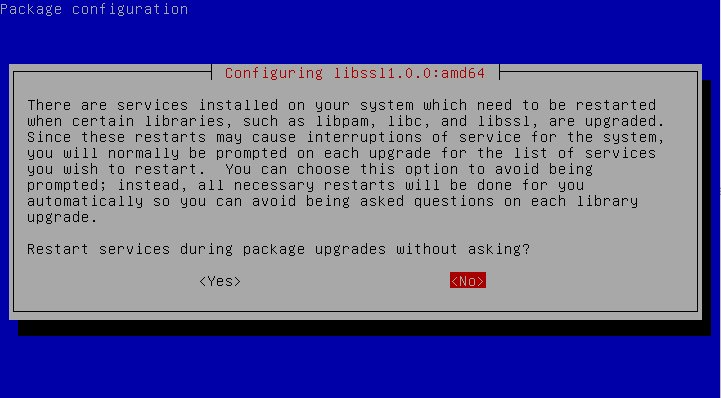
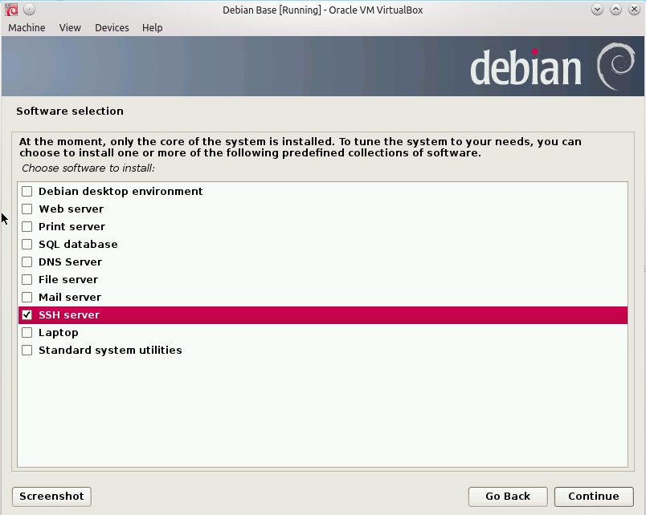
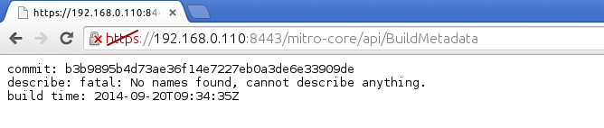

Mitro Login Manager On-Premise

On 31 Jul 2014, the cloud based login manager "Mitro" was published under the GPL on github. In this blogpost, I'll go through the steps of setting up the server and browser extensions.
The login manager Mitro has been developed by a small team based in NYC, wich was recently aquired by Twitter. Part of the deal, as I recall, was that the Mitro project had to be published under an open source license, which is great since I contacted the devs a few months ago if there is going to be an on-premise version of it. Well now there is, but it takes a bit of work to get everything up and running.
At the time of writing, I do not see Mitro On-Premise as production ready software as there are a few issues that have to be sorted out. But I'll do my best to help get it there and I'm happy to see that many others are actively working towards the same goal.
TL;DR
If you just want to install Mitro without understanding what you're doing - you can use my mitro-debian-setup.sh script which should do all of this automatically. Make sure to check the REAME.md for instructions first and run tail -f mitro-debian-setup.log in a second shell to catch problems like this:

You can avoid this completely by running apt-get update && apt-get upgrade prior to the script. Also, just to be on the same page - this is what my Debian image looks like:

A few notes before we get started - for those of you actually reading this...
I will generally not work under the root user but under admin with sudo. I will not print whole files but mark the changes like this:
user@host: $ vi /etc/example.conf
+ added line
- removed line
Or with numbered lines if the file is to huge or similar lines exist.
user@host: $ vi /etc/example.conf
98: + added line
98: - removed line
While I always try to make things understandable even for unexperienced users, keep in mind that this is a very critical application and you should know what you're doing before you attempt to host it for yourself or even others. Therefore, I will not go into any detail on basic commands such as how to exit vim or login via ssh. If you can't do that, you lack serious basics for this post!
For now, I got the server up and running under Debian 7, and the extensions working with my server with chromium-browser in Kubuntu 14.04. Keep in mind that right now, everything is in a state of constant change, so I'll either update this blogpost or look for a better way to keep the info up to date.
The whole setup consists of three main parts
- The mitro server daemon
- The mitro mailing daemon
- The mitro browser extensions
I'll try to get any changes I make in the code or scripts into the official Mitro repository, but I will note all important changes in this blogpost. If you're missing anything, you can always checkout my fork on github for commits that haven't been merged yet
Preparations
Some general info about the environment I used for this setup.
Server OS: Debian 7 Non-GUI (Connect via SSH)
Server VM: Virtualbox - 192.168.0.110
Client OS: Kubuntu 14.04 64bit
Client VM: Virtualbox -
Git Mitro: https://github.com/mitro-co/mitro
Git Fork: https://github.com/fredericmohr/mitro
Before you do anything, make sure that your server has installed all package updates.
root@debian:~ # apt-get update && apt-get upgrade
Since this is a critical application, we'll try to keep security in mind from the beginning.
Setup an admin user with sudo rights and one called mitro to run the services under. You should of course choose different, and strong password for both users as they build the foundation of your new login manager!
root@debian:~ # echo mitro-server > /etc/hostname
root@debian:~ # vi /etc/hosts
- 127.0.0.1 localhost
+ 127.0.0.1 localhost mitro-server
root@debian:~ # hostname -F /etc/hostname
root@mitro-server:~ # adduser admin
root@mitro-server:~ # adduser mitro
And in case you haven't done so during the installation of your os, set a strong password for root as well.
root@mitro-server:~ # passwd root
Next, grant sudo rights to admin, logout as root and login as admin.
root@mitro-server:~ # apt-get install sudo
root@mitro-server:~ # visudo -f /etc/sudoers.d/mitro
+ # admin user to manage mitro server
+ admin ALL=(ALL:ALL) ALL
root@mitro-server:~ # exit
Test if sudo works properly and move on to the next part if it does.
admin@mitro-server:~ $ sudo whoami
[sudo] password for admin:
root
Mitro Server Setup
Server prerequisites
Before we begin with the actual server, there are a few things we have to take care of such as setting up the directory and installing the base packages.
admin@mitro-server:~$ sudo mkdir /srv/mitro/
admin@mitro-server:~$ cd /srv/mitro/
admin@mitro-server:~$ sudo chown -R mitro:mitro /srv/mitro
admin@mitro-server:~$ sudo chmod g+s /srv/mitro
admin@mitro-server:~$ sudo chmod u+s /srv/mitro
admin@mitro-server:~$ sudo chmod 755 /srv/mitro
This is how the folder permissions should look like. The sticky bit will make sure, that the user and group ownership will be mitro throughout the setup.
admin@mitro-server:~$ ls -lh /srv/
drwsr-sr-x 2 mitro mitro 4.0K Sep 19 19:17 mitro
admin@mitro-server:~$ cd /srv/mitro
Install all Debian packages necessary to build and run the server and create the necessary binary links, since there are a few files called incorrectly. -- We should probably fix the build scripts...
admin@mitro-server:~$ sudo apt-get install git screen postgresql postgresql-contrib postgresql-pltcl-9.1 ant make g++ curl unzip
admin@mitro-server:/srv/mitro$ sudo curl -sL https://deb.nodesource.com/setup | sudo bash -
admin@mitro-server:/srv/mitro$ sudo apt-get install nodejs
Check if initdb is present. If not, you need to create a link to the executable.
admin@mitro-server:/srv/mitro$ which initdb
admin@mitro-server:/srv/mitro$ sudo ln -s /usr/lib/postgresql/9.1/bin/initdb /usr/bin/initdb
admin@mitro-server:/srv/mitro$ which initdb
/usr/bin/initdb
According to the Mitro README, the server should be run with the official Oracle Java JDK 7. However, I haven't had any problems with the openjdk version and since it's easier to maintain updates through apt-get, I am going to stick with it.
admin@mitro-server:/srv/mitro$ sudo apt-get install openjdk-7-jdk libpostgresql-jdbc-java
Just to be sure, trace back the current java executable and check if it really is jdk-7. In my case jdk-6 was still being used so I had to change it.
admin@mitro-server:/srv/mitro$ which java
/usr/bin/java
admin@mitro-server:/srv/mitro$ file /usr/bin/java
/usr/bin/java: symbolic link to `/etc/alternatives/java'
admin@mitro-server:/srv/mitro$ file /etc/alternatives/java
/etc/alternatives/java: symbolic link to `/usr/lib/jvm/java-6-openjdk-amd64/jre/bin/java'
admin@mitro-server:/srv/mitro$ sudo rm /etc/alternatives/java
admin@mitro-server:/srv/mitro$ sudo ln -s /usr/lib/jvm/java-7-openjdk-amd64/jre/bin/java /etc/alternatives/java
The following code-block shows some optional settings which I haven't tried myself. But I'll put them there in case anyone wants to try them.
# The sysctl.conf part is optional - depending wether or not you need/want multiple postgresql instances running.
# Edit /etc/sysctl.conf to add the following lines:
# run multiple instances of postgres
kern.sysv.shmmax=1610612736
kern.sysv.shmall=393216
kern.sysv.shmmin=1
kern.sysv.shmmni=32
kern.sysv.shmseg=8
# Then run the following for each line above
sudo sysctl -w <line>
Preparing the postgresql database
According to the docs, the postgresql database service must be running as the same user as the mitro service is running - which in this case means the unix user "mitro".
To get this done, you need to follow these steps:
# Stop Database
admin@mitro-server:/srv/mitro$ sudo /etc/init.d/postgres stop
admin@mitro-server:/srv/mitro$ sudo netstat -antp
# if postgres is still running for whatever reason
admin@mitro-server:/srv/mitro$ sudo killall -9 postgres
# prepare to start postgres as "mitro"
admin@mitro-server:/srv/mitro$ sudo chown -R mitro:mitro /var/run/postgresql/
Mitro uses pg_ctl, but Debian has switched to pg_ctlcluster so the build process fails! To fix that, you need to create a link for pg_ctl.
admin@mitro-server:/srv/mitro$ sudo ln -s /usr/lib/postgresql/9.1/bin/pg_ctl /usr/bin/pg_ctl
Before we can continue, we need to checkout the repository. I advise you to take the official repo and not my fork, as the latter might not be working at times since I tend to break things and push them - you have been warned!
admin@mitro-server:/srv$ sudo git clone https://github.com/mitro-co/mitro.git
Cloning into 'mitro'...
remote: Counting objects: 5516, done.
remote: Total 5516 (delta 0), reused 0 (delta 0)
Receiving objects: 100% (5516/5516), 65.85 MiB | 640 KiB/s, done.
Resolving deltas: 100% (1049/1049), done.
Prepare postgresql database
mitro@mitro-server:/srv/mitro/mitro-core$ mkdir -p /srv/mitro/mitro-core/build/postgres
mitro@mitro-server:/srv/mitro/mitro-core$ initdb --pgdata=/srv/mitro/mitro-core/build/postgres -E 'UTF-8' --lc-collate='en_US.UTF-8' --lc-ctype='en_US.UTF-8'
Start postgresql daemon and create the database
mitro@mitro-server:/srv/mitro/mitro-core$ pg_ctl -D /srv/mitro/mitro-core/build/postgres -l logfile start
mitro@mitro-server:/srv/mitro/mitro-core$ createdb -O mitro mitro
Check if postgresql is running properly
netstat -antp |grep "postgres"
tcp 0 0 127.0.0.1:5432 0.0.0.0:* LISTEN 7061/postgres
tcp6 0 0 ::1:5432 :::* LISTEN 7061/postgres
Installing and configuring the server
We only need the server files, which reside in mitro-core. Make sure that the right permissions are set and switch back to mitro before creating the database and running ant test.
#To avoid this, change at beginning of blogpost...
admin@mitro-server:/srv/mitro$ sudo mv ./mitro/mitro-core .
admin@mitro-server:/srv/mitro$ cd ../
admin@mitro-server:/srv$ sudo chown -R mitro:mitro mitro/
admin@mitro-server:/srv$ sudo su - mitro
mitro@mitro-server:~$ cd /srv/mitro/mitro-core/
mitro@mitro-server:/srv/mitro/mitro-core$ ant test
[...]
BUILD SUCCESSFUL
Total time: 50 seconds
If you find this during the test run, don't worry. We'll take care of this later.
[junit] WARN [2014-09-20 07:50:22,425Z] co.mitro.core.server.Manager: Not creating constraint groups_name_scope: DB is not Postgres
[junit] WARN [2014-09-20 07:50:22,425Z] co.mitro.core.server.Manager: Not creating constraint group_secret_svs_group: DB is not Postgres
[junit] ERROR [2014-09-20 07:50:22,463Z] co.mitro.access.servlets.ManageAccessEmailer: missing or invalid email: null
I'm actually not quite sure if the build script is really neede after going through all these steps manually.
# you don't need it - the script is trash...
mitro@mitro-server:/srv/mitro/mitro-core$ ./build.sh
To run the server, just type the following:
mitro@mitro-server:/srv/mitro/mitro-core$ ant server
I suggest you only run the server this way for testing purposes. If you want the server to run in the background, login as admin and type
admin@mitro-server:/srv/mitro/mitro-core$ screen -S mitro-server
admin@mitro-server:/srv/mitro/mitro-core$ su - mitro
mitro@mitro-server:~$ cd /srv/mitro/mitro-core/
mitro@mitro-server:/srv/mitro/mitro-core$ ant server > server_run.log 2>&1
[CTRL]+[A] [D]
admin@mitro-server:/srv/mitro/mitro-core$ tail -f server_run.log
[...]
[CTRL]+[C]
If you've made it this far, then mitro server is running. You can verify this by visiting this url: https://yourmitroserver:8443/mitro-core/api/BuildMetadata

Debugging:
I have added everything I found in the blogpost above so you shouldn't run into these problems, however if you do this might help you! Unfortunately I have forgotten to document most of the error messages, so I'll add the here in case I run into them again.
Error message:
mitro@mitro-server:/srv/mitro/mitro-core$ ant server
Buildfile: /srv/mitro/mitro-core/build.xml
compile:
jar:
[exec] Result: 128
[propertyfile] Updating property file: /srv/mitro/mitro-core/build/java/src/build.properties
[exec] shutil.rmtree(tempdir)
[exec] Traceback (most recent call last):
[exec] File "tools/jarpackager.py", line 109, in <module>
[exec] main()
[exec] File "tools/jarpackager.py", line 92, in main
[exec] unpack_jar(path, tempdir)
[exec] File "tools/jarpackager.py", line 29, in unpack_jar
[exec] process = subprocess.Popen(args)
[exec] File "/usr/lib/python2.7/subprocess.py", line 679, in __init__
[exec] errread, errwrite)
[exec] File "/usr/lib/python2.7/subprocess.py", line 1259, in _execute_child
[exec] raise child_exception
[exec] OSError: [Errno 2] No such file or directory
[exec] Result: 1
[echo] Built build/mitrocore.jar
Solution:
sudo apt-get install unzip
**Error message:**
mitro@debian:~$ pg_ctl -D /srv/mitro/mitro-core/build/postgres start
pg_ctl: another server might be running; trying to start server anyway
server starting
mitro@debian:~$ FATAL: lock file "postmaster.pid" already exists
HINT: Is another postmaster (PID 3468) running in data directory "/srv/mitro/mitro-core/build/postgres"?
Solution:
[*] If you can't see postgres running, you need to kill the old process first
[-] root: killall -9 postgres
[-] root: rm /srv/mitro/mitro-core/build/postgres/postmaster.pid